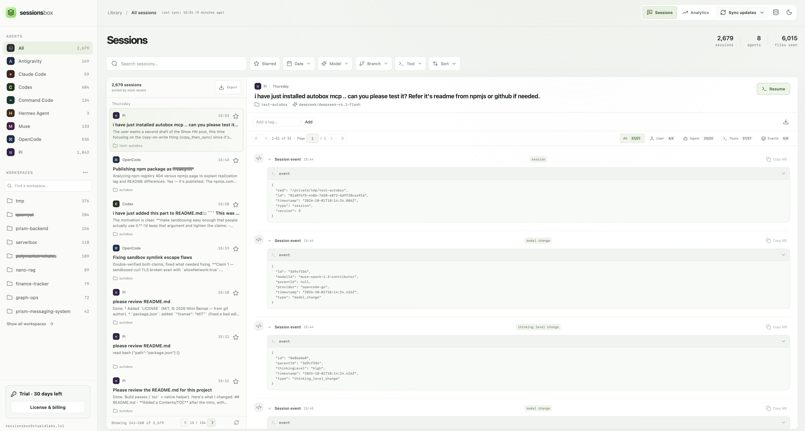
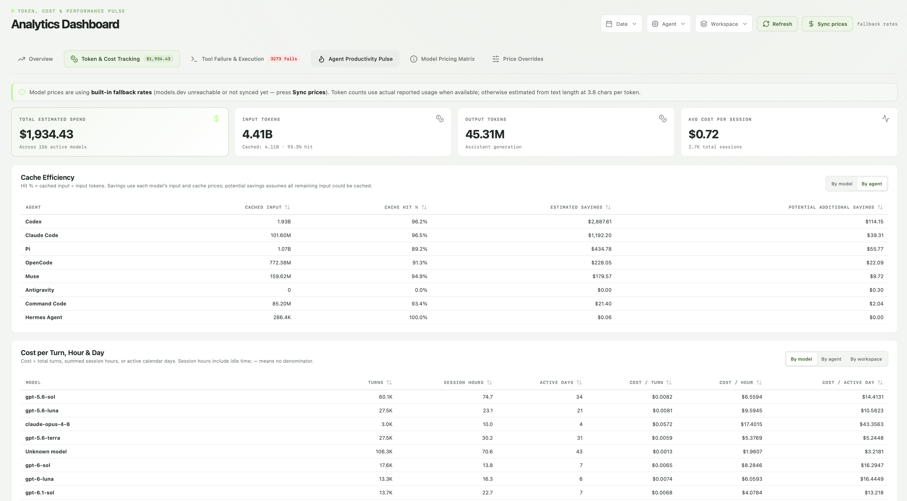
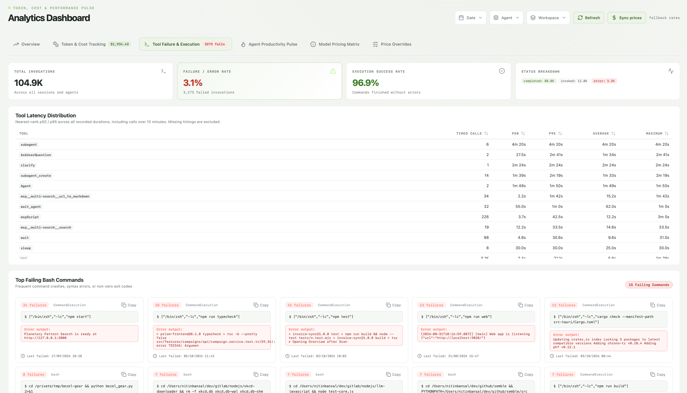

“Which agent did I do that in?”
Search across your saved sessions. Narrow by agent, workspace, date, model, branch, or tool. Read the conversation and its tool activity together, without opening a pile of JSONL files.
A local-first home for coding agent sessions
That fix from last week. The prompt that worked. The command that kept failing. SessionsBox brings your coding agent history into one searchable desktop app, so you can get back to the work instead of digging through logs.
Open the app and sync your local sessions to get started.

Bring together sessions from the tools you already use.
Less log digging. More building.
Search across your saved sessions. Narrow by agent, workspace, date, model, branch, or tool. Read the conversation and its tool activity together, without opening a pile of JSONL files.
Open a session and use Resume to return to its native agent CLI in your terminal. Review the command and working directory first, then continue with the original context.
Star useful sessions, add your own tags, and export full transcripts as Markdown or JSON. Keep a searchable record of what worked instead of solving the same problem twice.
Understand what happened
Look across your sessions to spot expensive runs, cache usage, slow tools, and recurring failures. Filter reports by date, agent, workspace, and model.


Compare models, agents, and workspaces. See input, output, and cached tokens alongside estimated spend, with pricing overrides for your own rates.
Review failure rates, tool timings, and repeated command errors. Go beyond “the agent got stuck” and see the activity behind the session.
Costs are estimates, not provider bills. SessionsBox uses reported token usage when available and text estimates when it is missing.
Get SessionsBox
Download for your platform, open the app, and sync your local sessions.
Choose the installer for your Mac’s processor.
Installers for Intel/AMD and ARM-based PCs.
AppImage, Debian/Ubuntu, or RPM packages.
SessionsBox ships without a paid signing certificate or Apple notarization. macOS and Windows may show an unidentified developer or unrecognized app prompt. The missing-signature prompt itself is harmless; there is no need to worry about that prompt alone. It reports missing developer verification, not a detected threat. Download from this page and approve the app only if you trust the source.
Open the DMG and drag Sessions Box into Applications. Try opening it once. If macOS blocks it because the developer is unverified, go to System Settings → Privacy & Security → Open Anyway, then confirm Open.
Apple’s instructions for unsigned appsIf SmartScreen shows an unrecognized-app prompt, choose More info → Run anyway when available. Windows may show “Unknown publisher” because the installer is unsigned. Managed devices or Smart App Control may prevent this override.
Microsoft’s explanation of SmartScreenLinux AppImage: allow execution in your file manager, or use chmod +x with your downloaded AppImage filename, then open it.
A few practical details
No. Session sync reads your existing local agent history into SessionsBox’s local database. It does not upload your transcripts or modify the original agent files. Model pricing can also be fetched online.
Contact us at hola@goodapps.store.
Resume uses the session’s native agent CLI and original workspace. The CLI and original session data must still be available. The app shows the exact command and any warnings before launch. Older Cline editor tasks resume from Cline’s History in their original editor.
Export a session, filtered results, or your entire library as Markdown or JSON. For a restorable copy, export a SQLite backup from the database manager, including your saved transcripts, bookmarks, and tags.